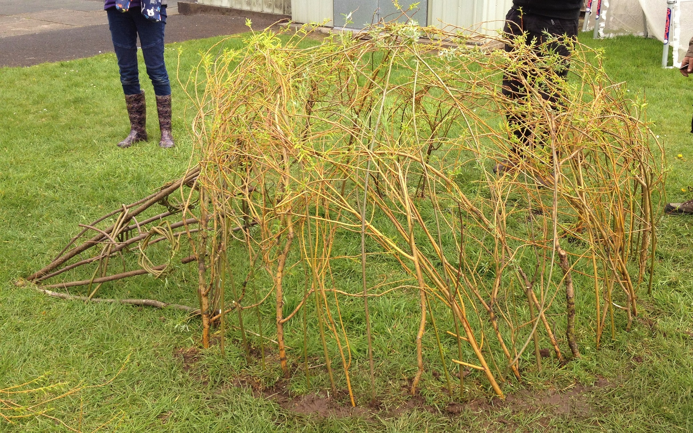

Hedgehogs and Videos
21-Apr-2017 | Milku
You probably think I'm going to talk about Sonic the Hedgehog, but you'd be wrong.
A couple of my humans took advantage of time off work and high school to go along to the local primary school and see a willow sculpture of a hedgehog being installed. One of the school girls had designed it and she was there helping some experts transform long sticks of willow into a beautiful hedgehog-like structure. My humans got involved too, weaving the willow into a body and they were responsible for the eyes. Maybe they'll do a hamster sculpture next. I must email the headteacher...
And then, surfing the internet, I found a new pop idol. After The Hamsters, of course. It’s Katy Perry. Did you know that her video for ‘Chained to the Rhythm’ features a hamster? The whole thing is a homage to all the YouTube videos showing people preparing gourmet food for hamsters and then clips of the hamsters scoffing the dainty morsels. Katy’s hamster isn’t the most photogenic possible and it’s so wasteful of the treats, dropping them on the floor and then ignoring them. Katy, next time you need a good looking hamster who will appreciate your culinary efforts, just call me.

It mightn't look like it, but I can appreciate gourmet food given half a chance.